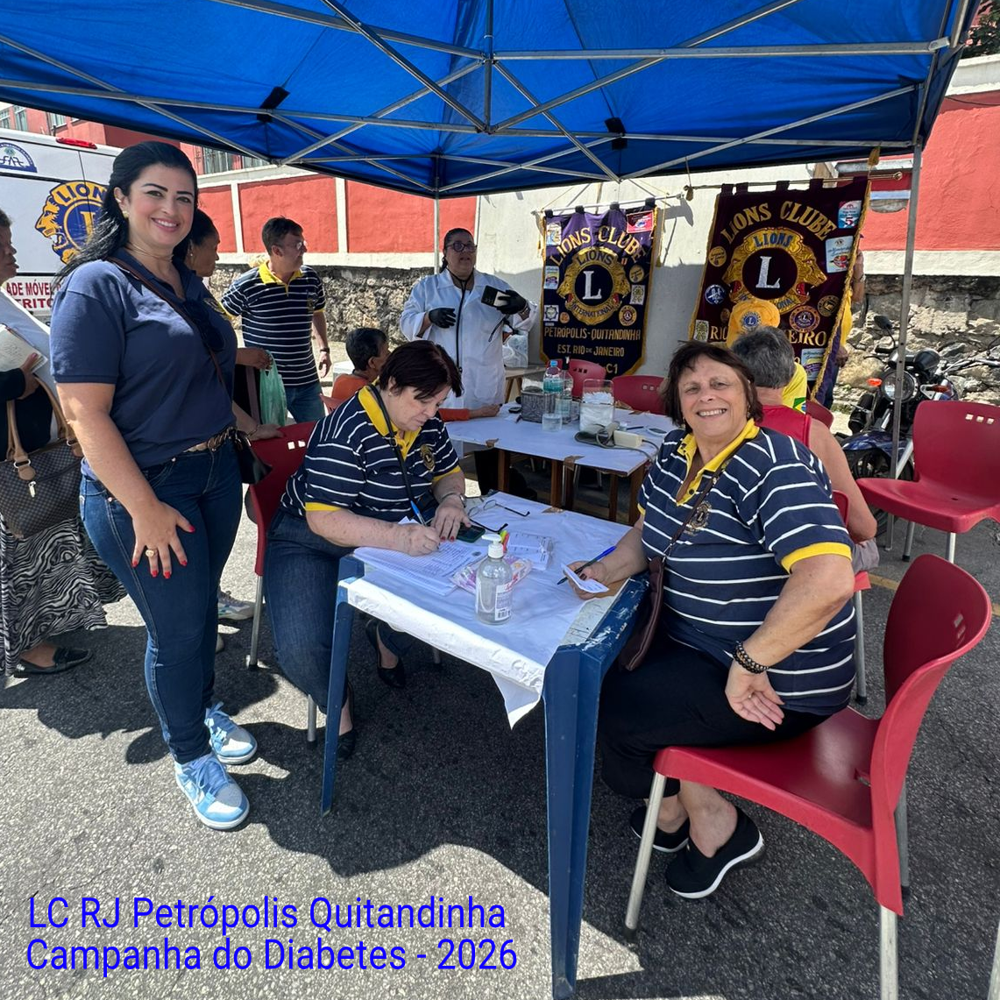

Encontre o seu clube
Lista histórica em ordem alfabética, em processo de levantamento dos dados. Nem todos os clubes relacionados estão ativos.
Lions Clubes
Da capital à região serrana, passando pela Baixada, Sul Fluminense e Costa Verde.
Leo Clubes
Juventude em formação para a liderança e o serviço comunitário.
Clubes de Castores
A porta de entrada das crianças no universo do voluntariado leonístico.
Lions Clubes, Leo Clubes e Clubes de Castores
Use a busca para localizar um clube pelo nome ou pelo bairro e município. Os clubes que já possuem página própria no portal exibem o link "Ver página".
Cada clube tem sua vitrine no portal
Cada Lions Clube do DLC-1 ganhou, gratuitamente, uma página própria dentro da plataforma para registrar e divulgar suas atividades.

LC RJ Flamengo
Ver Bem e Aprender Melhor: saúde oftalmológica e prevenção.

LC Duque de Caxias Ama Xerém
Centro de Convivência para Pessoas com Deficiência.

LC RJ Recreio dos Bandeirantes
Ação Social do Terreirão, com 10 clubes unidos.

LC Petrópolis Quitandinha
Diabetes e prevenção do câncer de mama na região serrana.
Quer a página do seu clube no portal?
O serviço de notícias do Distrito é gratuito para todos os clubes. Envie as informações e as fotos da sua ação social para a equipe do portal.